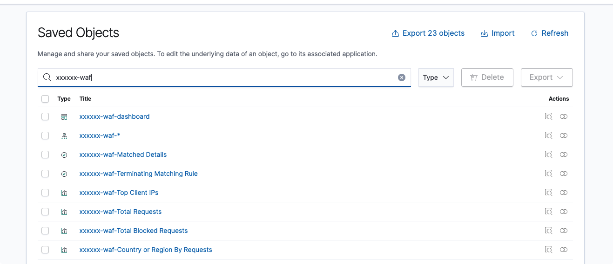

Tutorial: Extend Service Logs
Overview
The purpose of this document is to describe how to extend current Log Hub solution to support more types of AWS service logs.
In this guide, we will work you through a tutorial of how to add support for a new type of logs using WAF Logs as an example. If you are not from CSDC solution team, we also welcome your contributions. You can jump to How to Contribute for more details.
Notice
So far, this guide is only for Log Destination as S3. Check more information about AWS Service Log Destination.
Pre-requisites
- Clone the repo
- Provision an OpenSearch domain in VPC with private subnets for testing
Info
Currently, clone the code repo from code.amazon.com, all changes need be submitted to develop branch for code review.
How to Extend
Follow below step by step guide to learn how to extend service logs analysis for WAF in Log Hub solution.
Step 1: Update Log Processor
To add a new log type for WAF Logs to Log Processor Lambda, open
source/constructs/lambda/pipeline/service/log-processor/util/log_parser.py
Add an implemetation of LogType for WAF logs, which basically is just to implement the method parse(line) and return a processed record(s) in Json format.
class WAF(LogType):
"""An implementation of LogType for WAF Logs"""
_format = "json"
def parse(self, line: str):
json_record = json.loads(line)
# Extract web acl name, host and user agent
json_record["webaclName"] = re.search(
"[^/]/webacl/([^/]*)", json_record["webaclId"]
).group(1)
headers = json_record["httpRequest"]["headers"]
for header in headers:
if header["name"].lower() == "host":
json_record["host"] = header["value"]
elif header["name"].lower() == "user-agent":
json_record["userAgent"] = header["value"]
else:
continue
return json_record
Info
WAF Logs are in Json format, check Appendix 1: Log Type Implementation for another example for flat log files.
Step 2: Add CDK Stack
To generate a new CloudFormation Template for Waf Logs, Open source/constructs/bin/main.ts , add a new line as below:
new ServiceLogPipelineStack(app, 'WAFLog', { logType: 'WAF' });
For WAF, simply reuse the common CloudFormation parameters. Open
Log-hub/source/constructs/lib/pipeline/service/service-log-pipeline-stack.ts, and add ‘WAF’ to below line (This is required for all logs that is with log destination as S3):
if (['S3', 'CloudTrail', 'ELB', 'CloudFront', 'WAF'].includes(props.logType)) {
const logBucketName = new CfnParameter(this, 'logBucketName', {
...
For some other log types, you can add more CloudFormation parameters if needed. For example, add an extra parameter of Log Format for VPC Flow Logs since the log format can be customized.
Step 3: Add Index Template
Index templates let you initialize new indices with predefined mappings and settings. Before logs are ingested to OpenSearch, the index template/mapping must exist, otherwise, once data is loaded, the index mapping can't be changed.
Log Type is used to identify which template json file to use, Make sure the file name is same as the log type in lower case.
For example, if the log Type is ‘WAF’, create a waf.json in folder source/constructs/lambda/pipeline/common/opensearch-helper/assets/index_template
The template must be in a format of :
{
"aliases": {},
"mappings": {
"properties": {
"...": {
"type": "...",
...
},
...
}
},
"settings": {
"index": {
"number_of_shards": "5",
"number_of_replicas": "1"
}
}
}
Keep aliases as blank. Make sure at least number_of_shards and number_of_replicas are in the setting section (keep 5 and 1 as the default value). The alias and setting will be overrided during deployment.
Info
To learn more about index template, check Official OpenSearch Document about Index Template
Step 4: CDK Deploy
Run cdk deploy, for example:
cdk deploy WAFLog \
--parameters vpcId=vpc-0e172e182aa53806b \
--parameters subnetIds=subnet-06548d0c4ee34da59,subnet-0b873d0b6e73c2f9c \
--parameters securityGroupId=sg-04b03782612cb485f \
--parameters endpoint=vpc-dev-ardonphnbg327lwqncuj2vps3q.eu-west-1.es.amazonaws.com \
--parameters domainName=dev \
--parameters logBucketName=loghub-alb-loggingbucket0fa53b76 \
--parameters logBucketPrefix=waf \
--parameters backupBucketName=loghub-alb-loggingbucket0fa53b76 \
--parameters createDashboard=No \
--parameters indexPrefix=xxxxxx \
--parameters engineType=OpenSearch
To learn more about what the parameters are, check CloudFormation Design
Step 5: Test and Verify
Generate some log data by making some requests to WAF (For example, if WAF is for cloudfront, simply access the cloudfront link). Check S3 bucket to see if the log files are generated.
Then open Lambda in AWS management console, find and open the function WAFLog-WAFLogPipelineLogProcessorFn and check the cloudwatch logs. If the ingestion is successful, you should see logs as the following:
...
[INFO] 2022-01-14T05:45:14.397Z 947eb9f3-a2c6-4d59-bf63-870be02dd20a --> bulk_load response code 200
[INFO] 2022-01-14T05:45:15.165Z 947eb9f3-a2c6-4d59-bf63-870be02dd20a PUT xxxxxx-waf-2022-01-14/_bulk
[INFO] 2022-01-14T05:45:16.163Z 947eb9f3-a2c6-4d59-bf63-870be02dd20a --> bulk_load response code 200
[INFO] 2022-01-14T05:45:16.229Z 947eb9f3-a2c6-4d59-bf63-870be02dd20a --> Total: 278126 Success: 278126 Fail: 0
END RequestId: 947eb9f3-a2c6-4d59-bf63-870be02dd20a
You can also see error messages if the ingestion failed, check and then fix the error accordingly.
Step 6: Export Sample Dashboards
Once data is ingested into OpenSearch, you can then create dashboard and visualize for the logs. Follow the same naming standard.
For example, if the index prefix is xxxxxx-waf-*, create everything with same prefix xxxxxx-waf-

Once dashboard is completed, export the dashboard with related objects, the exported file is with file extention .ndjson. Open the export ndjson, and replace all xxxxxx-waf to %%INDEX%%, then save the file to project folder source/constructs/lambda/pipeline/common/opensearch-helper/assets/saved_objects
How to Contribute
If you are not one of the solution team members, and you want to contribute for new service logs, please follow the section How to Extend and get it built and tested in your account.
After that, you can contact one of our team members, and submit us with below artifacts:
- Log Type implementation in Python
- Index Template file (.json)
- Sample Dashboard file (.ndjson)
- Some sample log file that we can test (Nice to have)
Appendix
Log Type Implementation
The Log Type definition
class LogType(ABC):
"""An abstract class represents one type of Logs.
Each AWS service has its own log format.
Create a class for each service with an implementation of `parse(line)` to parse its service logs
"""
_fields = [] # list of fields
_format = "text" # log file format, such as json, text, etc.
@abstractmethod
def parse(self, line: str):
"""Parse the original raw log record, and return processed json record(s).
This should be implemented in each service class.
"""
pass
...
Below is an example of implementation for ELB (ALB) Logs
class ELB(LogType):
"""An implementation of LogType for ELB Logs"""
_fields = [
"type",
"timestamp",
"elb",
"client_ip",
"client_port",
"target_ip",
...
]
def parse(self, line: str) -> dict:
json_record = {}
pattern = (
"([^ ]*) ([^ ]*) ([^ ]*) ([^ ]*):([0-9]*) ([^ ]*)[:-]([0-9]*) ([-.0-9]*) "
'([-.0-9]*) ([-.0-9]*) (|[-0-9]*) (-|[-0-9]*) ([-0-9]*) ([-0-9]*) "([^ ]*) ([^ ]*) '
'(- |[^ ]*)" "([^"]*)" ([A-Z0-9-]+) ([A-Za-z0-9.-]*) ([^ ]*) "([^"]*)" "([^"]*)" '
'"([^"]*)" ([-.0-9]*) ([^ ]*) "([^"]*)" "([^"]*)" "([^ ]*)" "([^ ]+?)" '
'"([^ ]+)" "([^ ]*)" "([^ ]*)"'
)
result = re.match(pattern, line)
if result:
for i, attr in enumerate(self._fields):
# print(f'{attr} = {result.group(i+1)}')
json_record[attr] = result.group(i + 1)
else:
logger.error("Unable to parse line: %s", line)
return json_record